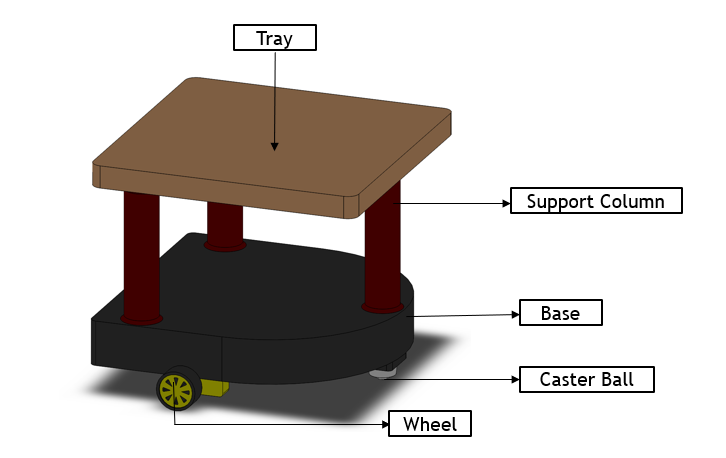
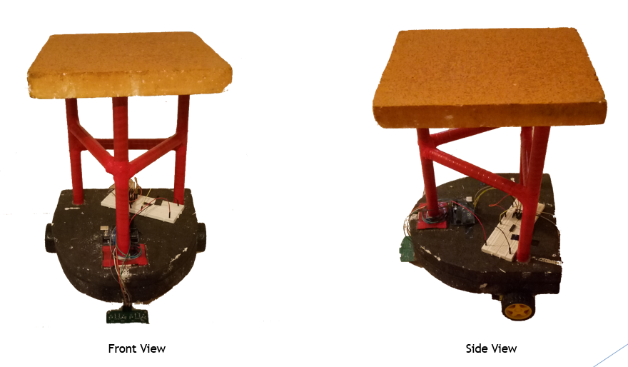
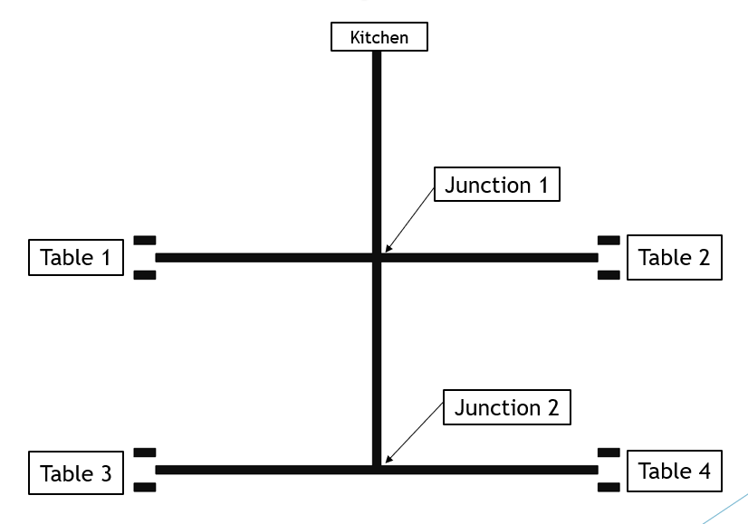

This project presents the development of “Baymax,” an automated restaurant waiter robot designed to streamline food delivery within a controlled indoor environment. The system combines mechanical design with embedded electronics to create a mobile robot capable of transporting food from the kitchen to designated tables. It operates using a line-following mechanism, where IR sensors detect a predefined path and guide the robot’s movement, while an Arduino Uno serves as the central controller for processing and decision-making. The robot is designed to navigate through multiple junctions, identify target locations, deliver items, and return to its starting point autonomously. Bluetooth communication is incorporated to enable command input, aiming to support a wireless control interface. The project demonstrates how basic robotics and automation principles can be applied to real-world service applications, while also highlighting challenges in communication reliability, sensor stability, and system integration.
None
The methodology of this project follows a step-by-step development process starting with the design and construction of the robot body using lightweight materials such as styrofoam and PVC pipes. After building the structure, electronic components including an Arduino Uno, DC motors, motor driver, IR sensors, and Bluetooth module are selected and assembled to form the control system. A circuit is then designed and implemented to connect all components and enable motor control and sensor input.
The robot is programmed using Arduino to follow a predefined path using IR sensors, allowing it to navigate from the kitchen to specific tables by detecting lines and making decisions at junctions. Basic Bluetooth communication is incorporated to send commands to the robot. Finally, the system is tested to evaluate its ability to deliver food and return to the starting point, and performance limitations are identified for further improvement.
Successfull Outcomes:
Unsuccessfull Outcomes:


